Hierdie is 'n kort hoofstuk oor die veiligheidspraktyke en -toestelle wat met elektrisiteit geassosieer is. Dit is belangrik dat leerders die gevare rondom elektrisiteit, en hoe om ongelukke en foute te voorkom, verstaan.
Leerders word aan verskeie veiligheidsmeganismes bekend gestel wat algemeen in toestelle en stroombane gebruik word om die risiko van elektriese skokke te verminder. Baie van hierdie veiligheidsmeganismes sal vir leerders onbekend wees omdat hulle binne toestelle is en dus nie sigbaar is nie. Dit is baie belangrik dat al die leerders in staat is om 'n driepuntprop veilig te bedraad omdat kortsluitings deur foutiewe bedrading van kragproppe veroorsaak kan word.
Die KABV staan 'n halwe week (1,5 uur) aan hierdie hoofstuk af. Daar is egter etlike aktiwiteite wat die moeite werd is om te doen en wat ook deur die KABV voorgestel word. 'n Moontlikheid is om effe meer tyd as deur die KABV toegeken vir dié hoofstuk te gebruik, en effe minder tyd aan Hoofstuk 7 oor die koste van elektriese energie af te staan. Laasgenoemde kan in minder as twee weke afgehandel word.
'n Voorstel is om 'n gesertifiseerde elektrisiën te nooi om gevallestudies oor die gevare van foutiewe elektrisiteit met leerders te deel, en kortliks die wetgewing rondom die sertifisering van eiendom by herverkoop te bespreek.
5.1 Veiligheidspraktyke (1 uur)
Take
Vaardighede
Aanbeveling
Aktiwiteit: Maak jou eie smeltdraad
Demonstrasie, volg van instruksies, waarneming, beskrywing, teken, verduideliking
Voorstel
Aktiwiteit: Teken stroombaandiagramme met smeltdrade
Opsporing en herroeping van inligting, kommunikasie (grafies)
KABV voorgestel
Aktiwiteit: Bedraad 'n driepuntprop
Volg van instruksies, waarneming, aantekening, beskrywing
KABV voorgestel
Aktiwiteit: Bedraad 'n huis
Opsporing en herroeping van inligting, kommunikasie (grafies)
KABV voorgestel
5.2 Onwettige verbindings(0,5 uur)
Take
Vaardighede
Aanbeveling
Aktiwiteit: Gevallestudie oor onwettige elektriese verbindings
Opsporing en herroeping van inligting, interpretasie, verduideliking
Voorstel
Hoe veilig is my elektriese verbindings?
Wat is 'n kortsluiting?
Hoekom het kragproppe drie drade?
Veiligheidspraktyke
anker
herset
oormaat
smeltdraad
stroombreker
aarding
aardlek
kortsluiting
Verbeel jou jy is tuis, dit is donker en jy het een van die boligte aangeskakel. Dan skakel jy 'n tweede lig aan. Skyn die eerste lig nou dowwer? Nee. Dit is omdat die elektriese stroombane in die huis parallelle stroombane is.
Hoekom gebruik ons parallelle stroombane in 'n huis? Onthou jy die aktiwiteite in die vorige hoofstuk? Jy het gesien hoe 'n seriestroombaan ophou werk as een deel daarvan breek. Dieselfde gebeur nie met 'n parallelle stroombaan nie. As een van die takke van die parallelle stroombaan ophou werk, is daar steeds volledige roetes vir die stroom en kan die res van die stroombaan steeds funksioneer. Dit stel jou ook in staat om verskillende ligte en kragproppe in die huis op verskillende tye aan te skakel.
Ons het ook gesien hoe die totale weerstand in die stroombaan toeneem wanneer ons bykomende weerstande by 'n seriestroombaan voeg en dat dit die stroom laat afneem. In 'n parallelle stroombaan verhoog bykomende weerstande nie die totale weerstand nie en die stroom neem nie af nie.
Safety Dog deel 'n paar nuttige veiligheidswenke in hierdie kort video.bit.ly/1cO4vmZ
Ongeag die voordele van die gebruik van parallelle stroombane in die elektriese bedrading van geboue is daar ook 'n nadeel. Parallelle stroombane kan oorlaai raak met te veel vertakkings en dan raak dit 'n veiligheidsrisiko. Die oorlading kan oorverhitting veroorsaak, en dit kan 'n brand laat ontstaan. Die brand kan deur die huis versprei en baie skade aanrig.
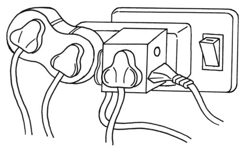Hierdie prop is oorlaai en is 'n veiligheidsrisiko.
Kom ons kyk na 'n paar veiligheidspraktyke wat gevolg word.
Aarding
Wat beteken dit om 'n elektriese toestel te aard? Kom ons beskou die voorbeeld van 'n wasmasjien.
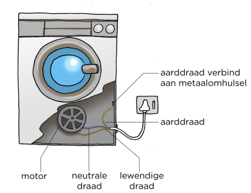
Die elektriese stroombaan in die wasmasjien het drie verskillende drade.
'n bruin lewendige draad
'n blou neutrale draad
'n groengeel gestreepte aarddraad
Die kleure vir die verskillende drade word universeel gebruik en ongeag van waar in die wêreld 'n mens is, sal jy altyd die drade aan hul kleure kan herken.
Die aarddraad is soms net groen of net geel, eerder as gestreep.
Die lewendige en neutrale drade verskaf die potensiaalverskil wat nodig is om die wasmasjien se motor te laat draai. Die aarddraad word aan die metaalomhulsel van die wasmasjien gekoppel. Elkeen van die drie drade is met plastiek omhul en is saamgebind in 'n enkele koord wat by die hoofkragtoevoer by die muur ingeprop word. Die aarddrade van al die elektriese kragpunte word saamgevoeg in een dik aarddraad en gekoppel aan 'n metaalpen wat in die grond ingekap is.
Die aarddraad is onaktief. Dit word net gebruik wanneer iets met die masjien verkeerd gaan. Indien 'n oop lewendige draad met die metaalomhulsel van die wasmasjien kontak maak, kan jy 'n elektriese skok opdoen as jy aan die metaalomhulsel raak. Eerder as om jou te skok, sal die stroom deur die aarddraad grond toe beweeg. Die aarddraad het 'n baie lae weerstand en daarom sal 'n sterk stroom maklik daardeur beweeg.
Hoe om 'n elektriese skok deur 'n toestel te hanteer.bit.ly/1c9pGDg
Die aarddraad voltooi die stroombaan en koppel die lewendige draad met die grond. Dit is 'n kortsluiting. Die wasmasjien sal ophou werk omdat daar nie meer elektrisiteit deur die motor vloei nie.
As daar nie 'n aarddraad was nie, sou die metaalomhulsel van die wasmasjien deel van die elektriese stroombaan wees, en enigiemand wat daaraan raak sou 'n elektriese skok kry. Om hierdie rede is die aarddraad in enige elektriese toestel 'n belangrike veiligheidskomponent.
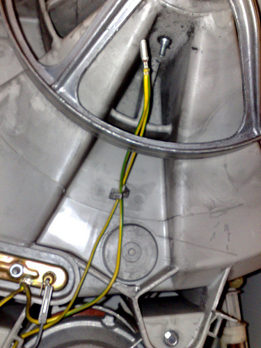Die groengeel aarddraad gekoppel aan die metaalomhulsel aan die binnekant van 'n elektriese motor.
Wat is kortsluitings? 'n Kortsluiting vind gewoonlik per ongeluk plaas wanneer 'n nuwe roete vir die vloei van elektrisiteit geskep word. Die bykomende roete het 'n baie lae weerstand en dus verhoog die stroom. Hierdie verhoogde stroom kan toestelle beskadig en laat oorverhit. Oorverhitting kan tot brande lei.
Daar is verskeie veiligheidsmeganismes om die stroom mee af te sluit wanneer 'n kortsluiting plaasvind.
Kom ons kyk na 'n paar veiligheidstoestelle wat algemeen in gebruik is.
Maak jou eie smeltdraad
Hierdie is 'n eenvoudige manier om te demonstreer hoe 'n smeltdraad werk. Leerders gaan 'n kort smeltdraad uit staalwol maak. Maak seker dat jy 'n hittebestande teël of blok onder die smeltdraad plaas, want dit gaan warm word en uitbrand. 'n Ou keramiekteël of stukkie hout sal goed werk.
Smeltdrade is 'n praktiese toepassing van die verhittingseffek van 'n elektriese stroom. As jy genoeg apparaat het, kan jy die leerders toelaat om hierdie aktiwiteit in klein groepies te doen. Anders kan jy dit demonstreer.
MATERIALE:
Die gloeilamp is ingesluit om aan te dui dat stroom vloei terwyl die staalwol in posisie is, maar dat dit ophou vloei sodra die staalwol smelt. Die verstelbare weerstand word gebruik om aan te toon dat wanneer die weerstand hoog is, die stroom laag genoeg is om die smeltdraad te laat warm word sonder dat dit smelt. Wanneer die weerstand verlaag word, verhoog die stroom en die staalwol smelt.
As jy die demonstrasie meer opwindend wil maak, kan jy 'n klein bolletjie staalwol eerder as 'n draadjie gebruik. Die staalwol sal vonke maak en brand. Doen hierdie agter 'n skerm om te verhoed dat die vonke op 'n leerder beland.
As jy nie 'n verstelbare weerstand het nie, laat dit weg uit die stroombaan en verduidelik liewers die konsep. 'n Ammeter is ook nie noodsaaklik in hierdie aktiwiteit nie, want die gloeilamp sal aandui of daar stroom vloei of nie.
drie 1,5 V-selle (sterk battery)
kopergeleidrade met krokodilknypers
staalwol
hittebestande mat of stuk hout
flitsgloeilamp
verstelbare weerstand
ammeter
INSTRUKSIES:
Stel 'n stroombaan op soos in die volgende diagram.
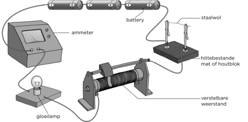
Maak 'n draad uit 'n paar staalwolvesels. Dit moet nie baie dik wees nie. Enkele vesels sal genoeg wees.
Gebruik die staalwol om die stroombaan te voltooi.
Stel die verstelbare weerstand op sy hoogste weerstand.
Sluit die skakelaar. Wat neem jy waar?
Die gloeilamp behoort te brand en die staalwol sal warm word maar nie smelt nie.
Noteer die ammeterlesing; dit meet die stroom in die stroombaan.
Maak die skakelaar oop.
Stel die verstelbare weerstand op sy laagste weerstand.
Sluit die skakelaar. Wat neem jy waar?
Die staalwol smelt/brand uit en die gloeilamp hou op brand.
VRAE:
Teken 'n stroombaandiagram vir jou stroombaan.
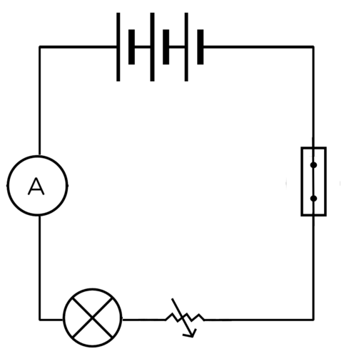
Hoekom is daar 'n gloeilamp in die stroombaan?
Die gloeilamp dui aan of daar stroom in die stroombaan vloei of nie. As die gloeilamp brand, vloei daar stroom. As die gloeilamp nie brand nie, vloei daar nie stroom nie (of baie min stroom).
LET WEL: Soms is daar wel 'n baie klein stroom teenwoordig, maar nie genoeg om die gloeilamp te laat brand nie. Die gloeilamp kan 'n goeie aanduiding gee, maar die ammeter gee die beste aanduiding of daar stroom vloei of nie.
Wat het met die stroom gebeur toe jy die weerstand verlaag het? Met ander woorde, wat het met die ammeterlesing gebeur?
Die stroom neem toe wanneer die weerstand verlaag word. Die ammeterlesing neem toe.
Wat dink jy gebeur met die elektriese stroom wanneer die staalwol uitbrand? Verduidelik jou antwoord.
Daar vloei nie stroom nie, want die stroombaan is verbreek. Daar is nie meer 'n voltooide baan vir die elektrone om in te beweeg nie.
'n Smeltdraad is 'n draad wat sal smelt wanneer die stroom daarin te hoog word, gewoonlik weens 'n elektriese fout soos 'n kortsluiting of oorlading. Wanneer die smeltdraad smelt, word die stroombaan verbreek en daar vloei nie meer stroom nie. Dit ontkoppel die toestel om verdere skade te voorkom.
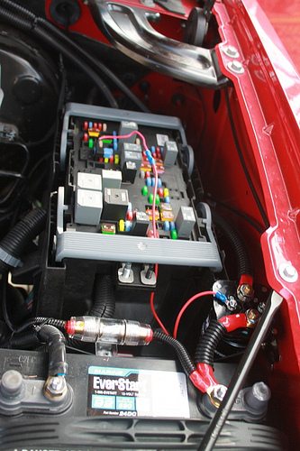Motors het ook smeltdrade. Sien jy die smeltdraad op hierdie foto van 'n motorbattery?
Die maksimum stroom wat 'n smeltdraad kan hanteer word daarop aangedui. Op die foto is 'n 5 ampère-smeltdraad. Dit sal smelt indien 'n stroom groter as 5 ampère daardeur beweeg.
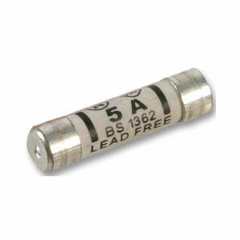'n 5 ampère-smeltdraad.
Teken stroombaandiagramme met smeltdrade
INSTRUKSIES:
Teken die volgende stroombaandiagramme om die posisies waar smeltdrade geplaas moet word aan te dui.
'n Stroombaandiagram met twee selle en twee gloeilampe in serie geskakel. Plaas 'n smeltdraad in die stroombaan sodat al die gloeilampe sal uitdoof as die smeltdraad breek.
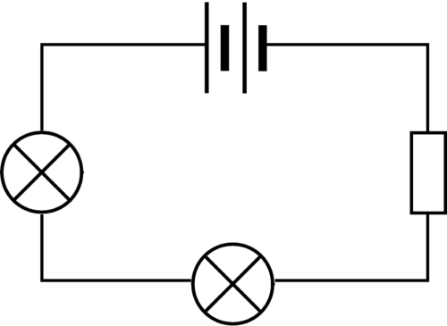
'n Stroombaandiagram met 'n sel en twee gloeilampe in parallel geskakel. Plaas 'n smeltdraad in die stroombaan sodat slegs een gloeilamp sal uitdoof as die smeltdraad breek.
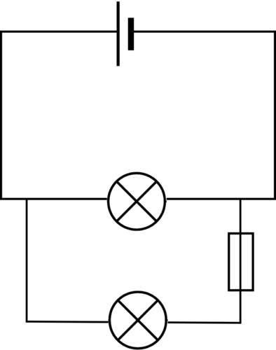
'n Stroombaandiagram met 'n sel en twee gloeilampe in parallel geskakel. Plaas 'n smeltdraad in die stroombaan sodat albei gloeilampe sal uitdoof as die smeltdraad breek.
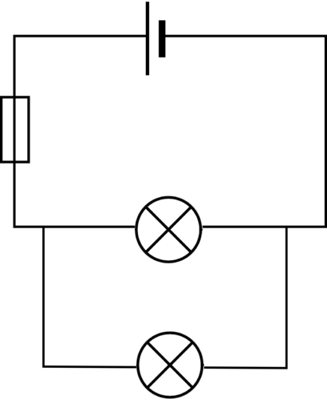
Elke keer as 'n smeltdraad smelt, moet dit vervang word. Daar is ander toestelle wat deesdae meer algemeen as smeltdrade in huishoudings gebruik word, soos byvoorbeeld stroombrekers.
Stroombrekers is van die belangrikste veiligheidstoestelle wat in ons huise gebruik word. Sonder stroombrekers kan die elektrisiteit in ons huise en geboue gevaarlik wees weens die risiko van vuur en ander gevare, wat kan voorkom wanneer elektriese bedrading foutief is of toerusting faal.
'n Stroombreker is soortgelyk aan 'n smeltdraad, maar kan herset word. As 'n smeltdraad gesmelt het, moet dit weggegooi word en met 'n nuwe een vervang word. 'n Stroombreker werk op dieselfde manier as 'n skakelaar en onderbreek die stroombaan as die stroom te hoog raak. Jy het moontlik al hierdie tipe skakelaars opgemerk op 'n verdeelbord in jou huis of skool.
Dit is 'n goeie idee om die verdeelbord in jou skool te identifiseer en dit aan die leerders te wys sodat hulle die skakelaars kan sien.
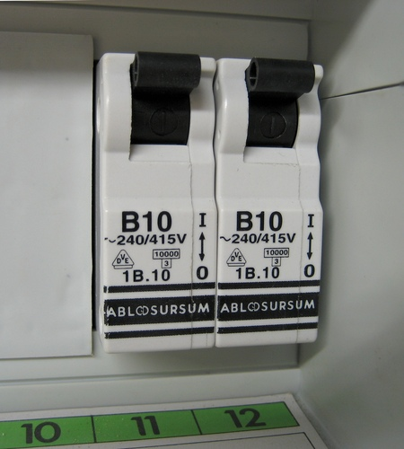'n Voorbeeld van stroombrekers met skakelaars.
Kom ons kyk hoe 'n stroombreker werk. Onthou jy dat ons in Gr. 8 van elektromagnete geleer het toe ons na die effekte van 'n elektriese stroom gekyk het? 'n Elektromagneet is 'n soort magneet wat in die aanwesigheid van 'n elektriese stroom om 'n staaf vorm. Die sterkte van die magneet hang van die elektriese stroom af. 'n Sterker stroom lei tot 'n sterker magneet.
Indien jy van die konsepte uit vorige grade wil hersien, onthou om www.curious.org.za te besoek om al die Gr. 7 tot 9-inhoud te kan sien. Ontdek meer aanlyn!
'n Basiese stroombreker bestaan uit 'n skakelaar wat aan 'n elektromagneet gekoppel is. Beskou die volgende diagram.
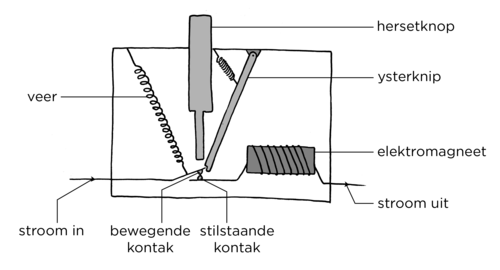
Wanneer die skakelaar aan is, vloei stroom deur die toestel, vanaf die linkerkant deur die bewegende kontak en oor na die stilstaande kontak. Dit beweeg dan rondom die elektromagneet en anderkant uit. Die ystervangplaatjie hou die bewegende kontak in posisie en voltooi die stroombaan. Wanneer die stroom wat deur die stroombreker vloei, toeneem, word die elektromagneet sterker. Indien die stroom 'n onveilige vlak bereik, word die elektromagneet sterk genoeg om die vangplaatjie nader te trek. Dit stel die bewegende kontak vry sodat die stroombaan verbreek en die elektrisiteit afgesluit word, soos in die volgende diagram getoon.
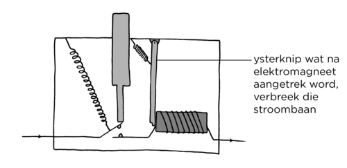
Wanneer die fout herstel is en dit veilig is om weer die elektrisiteit aan te sluit, druk 'n mens die hersetknoppie om die kontakte weer aan mekaar te laat raak.
Aardlek
Ons het in vorige hoofstukke oor die gevare van elektriese lading gepraat. 'n Elektriese lading sal vanaf 'n gebied met hoë potensiële energie na 'n gebied met lae potensiële energie beweeg. Kan jy onthou wat jy oor weerlig geleer het? Die oormaat elektrone in die wolke beweeg af grond toe en dra in die proses 'n groot hoeveelheid energie oor.
Die aardlekstroombreker word in die elektriese stroombane van huishoudings en besighede gebruik. Die stroombrekers vir die verskillende dele van die stroombaan word op die elektriese verdeelbord geplaas. Die aardlekstroombreker is ook op die verdeelbord.
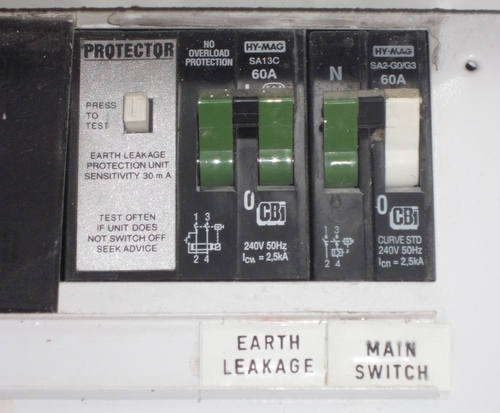'n Voorbeeld van die aardlek en hoofskakelaar op 'n verdeelbord in 'n huis.
Die aardlekstroombreker is 'n veiligheidstoestel wat die elektrisiteitstoevoer na die huis kan afsluit. Die aardlek kan waarneem wanneer stroom in die aarddraad beweeg. Indien stroom deur die aarddraad beweeg, beteken dit daar is iewers 'n kortsluiting, soos in die voorbeeld van die wasmasjien verduidelik is. Die aardlekstroombreker sluit as veiligheidsmaatreël al die stroom af.
Weerlig is altyd gevaarlik vir elektriese stroombane. In areas waar weerlig gereeld voorkom, is dit algemeen om weerligafleiers te gebruik. 'n Weerligafleier is 'n metaalpaal wat aan die huis vasgemaak word, met sy onderpunt onder die grond begrawe.
'n Weerligafleier op die dak van 'n huis.
Indien weerlig die huis tref, sal die groot toename in stroom veilig deur die metaalpaal afgelei word tot in die grond. Dit help om elektriese brande te voorkom wat weens weerlig in huishoudings ontstaan.
In die eerste gedeelte van hierdie hoofstuk het ons gleer van die drie drade wat aan die meeste elektriese toestelle gekoppel is. Voltooi die volgende tabel om die kleure van die drie drade te identifiseer.
Draad
Kleur
Neutrale draad
Aarddraad
Lewendige draad
Draad
Kleur
Neutrale draad
Blou
Aarddraad
Groengeel gestreep
Lewendige draad
Bruin
Die drie drade is in plastiekisolasie omhul om een koord te vorm wat aan die kragprop vas is. Die prop word dan by die muursok ingeprop om die toestel aan die hoofkragtoevoer te koppel. Nuwe elektriese toestelle het gewoonlik reeds 'n kragprop aan, maar sommige ouer toestelle nie. Dit is belangrik om 'n standaard kragprop te kan bedraad. Op die foto is 'n kragprop waarvan die koord losgemaak is.
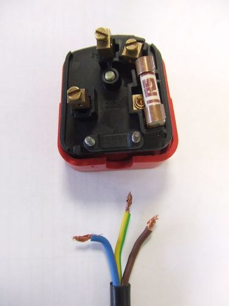Die drie drade wat die koord vorm wat aan 'n kragprop vas is.
Hoekom is daar drie drade? Ten einde 'n voltooide stroombaan te hê, moet daar drade wees wat by die huis inkom, asook drade wat die huis verlaat. Die draad wat by die huis inkom, is die lewendige draad. Die neutrale draad verlaat die huis en is geaard. Die aarddraad het 'n baie lae weerstand en word deur die propsok aan die aardkabel van die huis verbind. Die aardkabel lei na die grond. As 'n elektriese toestel weens 'n elektriese fout gelaai raak, kan dit deur die aarddraad en aardkabel in die grond ontlaai. Dit voorkom dat iemand weens 'n foutiewe toestel 'n elektriese skok kry.
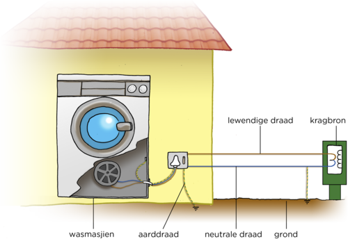Huise en ander geboue is aan die nasionale elektrisiteitsnetwerk verbind deur die lewendige draad wat elektrisiteit by die huis inlei, en die neutrale draad waardeur dit die huis verlaat.
Ten einde die nasionale netwerk teen weerlig te beskerm, word die neutrale draad geaard waar dit die huis verlaat, soos in die diagram getoon. Indien weerlig die oorhoofse kabels of transmissielyne tref, vloei die stroom grond toe eerder as om die hele netwerk te laat uitbrand.
Die elektriese prop het drie metaalpenne. Elke pen het 'n gaatjie aan die een punt, met 'n klein metaalskroefie. As die skroefie losgedraai word, is die gaatjie oop, en as dit vasgedraai word, is die gaatjie toe. Kom ons kyk na die binnekant van die prop om te sien hoe om dit te bedraad.
'n Kort video wat wys hoe om 'n driepuntprop te bedraad.bit.ly/18JuoUj
Bedraad 'n driepuntprop
Dit is belangrik dat leerders dit self oefen. Dit is nie nodig om 'n driepuntprop vir elke leerder te hê nie. Verdeel die klas in klein groepies en gee aan elke groep een stel apparaat. Elke leerder in die groep kan dan 'n beurt kry om die prop te bedraad en die drade weer los te maak vir die volgende leerder se beurt.
Benadruk die belangrikheid daarvan om die drade versigtig te stroop. Indien die koperdrade raakgesny of beskadig word, kan dit die prop onveilig maak.
MATERIALE:
stuk geïsoleerde elektriese koord
draadstroper of handwerkmessie
driepuntprop
klein skroewedraaier
Kyk na die foto van 'n driepuntprop.
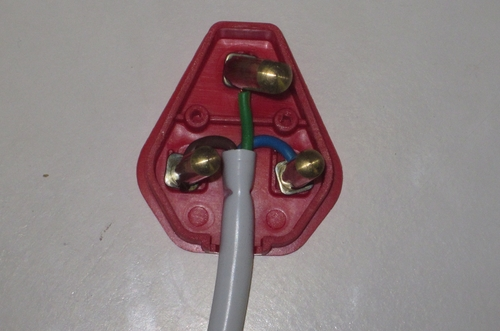'n Suid-Afrikaanse prop.
Aan watter pen is die groengeel draad gekoppel?
Die groengeel aarddraad is altyd aan die boonste pen gekoppel.
Aan watter pen is die blou neutrale draad gekoppel?
As 'n mens die prop van onder af beskou, is die blou neutrale draad altyd aan die regterkantse pen gekoppel.
Aan watter pen is die bruin lewendige draad altyd gekoppel?
As 'n mens die prop van onder af beskou, is die bruin lewendige draad altyd aan die linkerkantse pen gekoppel.
Ons gaan nou ons eie proppe bedraad.
INSTRUKSIES:
Sny ongeveer 2 cm van die wit isolasie om die elektriese koord af om die drie drade daarbinne te ontbloot. Moenie direk in die draad insny, soos wat 'n mens 'n brood sou sny nie. Beweeg die lem versigtig in 'n sirkelbeweging om die koord totdat jy deur die isolasie gesny het.
Wanneer jy die drie verskillend gekleurde drade ontbloot het, sny ongeveer 'n halwe sentimeter van die isolasie rondom elkeen van die drie geïsoleerde drade weg om die koperdraad aan die binnekant te ontbloot.
Draai die koperdrade liggies met jou vingers in 'n stywe bondel.
Maak die prop se omhulsel oop.
Draai die klein skroefies op die drie metaalpenne los.
Druk die punt van elke koperdraad in een van die metaalpenne in. Die groengeel draad hoort by die boonste pen (soms met 'E' gemerk, of met die 'aard'-simbool). Die blou draad hoort by die regterkantse pen as 'n mens van onder af kyk (soms met 'N' vir neutraal gemerk). Die bruin draad hoort by die linkerkantse pen as 'n mens van onder af kyk (soms met 'L' vir lewendig gemerk).
Draai elkeen van die skroefies vas om die drade in posisie te hou.
Plaas die prop se omhulsel terug.
Jy het nou 'n driepuntprop korrek bedraad en aan 'n elektriese koord gekoppel.
Watter veiligheidsmaatreëls dink jy moet gevolg word wanneer jy die driepuntprop van 'n werklike toestel bedraad? Bespreek dit met jou maat of die klas en skryf jou antwoord hier.
Leerders moet daarop let dat hulle in hierdie aktiwiteit proppe gebruik het wat nie aan 'n elektriese toestel gekoppel is nie. Indien hulle met 'n werklike elektriese toestel werk, moet hulle seker maak dat die toestel nie aangeskakel is of 'n ander kragkonneksie het nie. Hulle moet ook op 'n droë oppervlak werk.
As 'n mens van onder af kyk, met die penne wat na jou toe wys, word die groengeel aarddraad altyd aan die boonste pen gekoppel, die blou neutrale draad altyd aan die regterkantse pen en die bruin lewendige draad altyd aan die linkerkantse pen.
Noudat ons meer weet omtrent veiligheidspraktyke in die elektriese bedrading van geboue, kom ons oefen deur die bedrading vir 'n huis te ontwerp.
Bedraad 'n huis
Dit is nie nodig dat leerders 'n model van hierdie stroombaan bou nie. Die leerders moet beplan hoe hulle 'n stroombaan vir die huis sal opstel wat sal toelaat dat elke kamer 'n lig het wat aan- en afgeskakel kan word sonder om die algehele stroombaan te verbreek. Met ander woorde, hulle moet 'n parallelle stroombaan opstel met 'n skakelaar in elke vertakking. Die huis moet 'n hoofskakelaar hê wat al die ligte kan afskakel, en moet 'n smeltdraad hê in geval van oorlading.
INSTRUKSIES:
Jy het 'n pophuis gebou vir die bure se dogtertjie. Die pophuis het twee slaapkamers, 'n badkamer, 'n sitkamer en 'n kombuis. Jy wil 'n eenvoudige stroombaan vir die pophuis maak.
Lees wenke oor veiligheid in en om die huis.bit.ly/16mWMwE
Begin deur die vloerplan van die huis te teken. Wanneer jy dit klaar het, teken 'n bedradingstelsel wat aantoon hoe jy 'n gloeilamp in elke kamer sou plaas. Elke lig moet kan aan- en afskakel sonder om die ander ligte in die huis te beïnvloed. Daar moet 'n hoofskakelaar in die kombuis wees, en 'n smeltdraad om oorlading te voorkom.
Teken dit eers rofweg voordat jy die finale ontwerp in jou werkboek oorteken. Sluit byskrifte in vir elke kamer.
Onwettige verbindings
onwettige
voorsiening
Wanneer iemand sy/haar huis se elektriese stroombaan aan die nasionale netwerk koppel sonder 'n meter, word dit 'n onwettige verbinding genoem. Dit word gedoen sonder die toestemming of medewete van Eskom. Omdat Eskom nie hierdie elektrisiteitsverbruik kan monitor nie, is dit diefstal, want hierdie verbruikers betaal nie vir die elektrisiteit nie.
Party mense maak geld uit onwettige verbindings en ander gebruik onwettige verbindings omdat hulle nie 'n wettige manier het om elektrisiteit te bekom nie. Nog ander het toegang tot wettige elektrisiteit maar verkies om nie daarvoor te betaal nie. Hierdie elektriese verbindings is nie net onwettig en 'n vorm van energiediefstal nie, maar hulle is ook baie gevaarlik, soos jy in die volgende aktiwiteit sal sien.
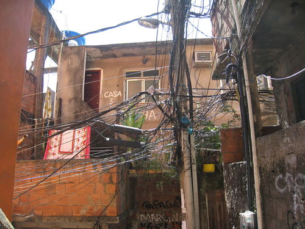Elektrisiteitsdiefstal is onwettig en ook baie gevaarlik weens onveilige verbindings en brandrisiko's.
Gevallestudie oor onwettige elektriese verbindings
INSTRUKSIES:
Lees die volgende koerantberig.
Beantwoord die vrae wat volg.
Doornbach- informele nedersetting vier kragvoorsiening
WesKaapNuus, Julie 2012
Daar was groot feesviering in Doornbach, 'n informele nedersetting net buite Kaapstad, toe die stadsraad oor 'n tydperk van 'n paar maande in 2012 sowat 200 nuwe elektriese verbindings aangeskakel het. Onwettige elektriese verbindings was voorheen die enigste elektrisiteitsvoorsiening aan die gebied. Owerhede ervaar dikwels heftige teenkanting wanneer daar gepoog word om onwettige elektriese verbindings in informele nedersettings af te sny. Die Doornbach-inwoners het egter dadelik self die massiewe web onwettige drade afgesny toe hulle uiteindelik formele, wettige elektrisiteit ontvang het.
Behalwe die massa drade wat deur die informele nedersetting gespan was, het baie van die drade oor Potsdamweg gehang, waar die hoofpad deurloop. Dit was baie gevaarlik want die drade het baie laag gehang en dikwels aan verbygaande vragmotors gehaak en dan gebreek. Die gevaar van brande en elektriese skokke vir verbygangers en voertuie was ook 'n bekommernis. Die gebruik van wettige elektrisiteit sal ook help om hutbrande te voorkom omdat inwoners minder op kerse en paraffienstowe sal staatmaak.
'n Twee-en-vyftig-jarige inwoner van Doornbach, wat die einde van onwettige verbindings in die nedersetting help vier het, het gesê dat sy 18 jaar lank al daar woon en nooit enige munisipale dienste van die stadsraad ontvang het nie. Die rede hiervoor is dat hulle hul aanvanklik op private grond gevestig het, wat beteken het dat die stadsraad nie in terme van nasionale wetgewing dienste kon voorsien nie. Die stadsraad het egter in Mei 2011 die grond gekoop en Eskom kon toe die proses van elektrisiteitsverskaffing aan huishoudings in Doornbach begin. Die 52-jarige is baie opgewonde daaroor dat sy nou 'n strykyster kan gebruik en 'n yskas kan installeer.
As simboliese gebaar het die inwoners dit op hulself geneem om die onwettige drade te verwyder. Jong inwoners het teen die onveilige tydelike pale opgeklim om die draad bymekaar te maak om later aan die skrootwerf te verkoop. Nie almal het egter die aanskakel van wettige elektriese verbindings in Doornbach gevier nie. Vele inwoners van formele behuising in nabygeleë nedersettings het in die verlede geld gemaak uit die verkoop en voorsiening van onwettige elektrisiteit aan Doornbach. Straatligte is ook in Doornbach aangelê en daar word gehoop dat dit sal help om die misdaadsyfer te verlaag.
Laastens het die stad Kaapstad hul opregte dank uitgespreek teenoor die gemeenskap van Doornbach omdat die projek volgens hulle nie suksesvol sou wees sonder die gemeenskap se ondersteuning, betrokkenheid en samewerking nie.
VRAE:
Wat is 'n informele nedersetting?
'n Informle nedersetting is 'n nedersetting wat nie deur stadsbeplanners beplan is nie. Dit beteken dat daar nie behoorlike paaie of huise is nie. Daar is ook nie sanitêre, water- of elektriese dienste in plek voordat mense hulle daar vestig nie.
Nadat jy hierdie artikel gelees het, wat dink jy is die hoofrede hoekom mense oorspronklik die onwettige verbindings gemaak het?
Die inwoners het hulle op private grond gevestig en daar was nie elektriese verbindings op die terrein nie.
Hoekom is dit gevaarlik vir die jong inwoners om teen die tydelike elektriese pale uit te klim?
Die drade is nie altyd geïsoleer nie en 'n persoon kan geskok word as hy/sy aan lewendige elektriese drade raak.
Wat was sommige van die fisiese gevare van die onwettige verbindings in Doornbach?
Die onwettige verbindings kon verbygangers skok en brande veroorsaak, en die laaghangende drade oor die hoofstraat kon aan verbygaande vragmotors vasgehaak het.
Buiten die fisiese gevare wat met onwettige verbindings verband hou, hoekom is hulle onwettig?
Eskom word nie betaal vir die elektrisiteit wat die inwoners verbruik nie. Dit beteken dat hulle geld verloor omdat hulle die elektrisiteit op 'n indirekte manier voorsien.
Opsomming
Elektrisiteit kan gevaarlik wees en daarom benodig ons veiligheidstoestelle soos smeltdrade, stroombrekers en aardlekke om die risiko's te verminder.
'n Smeltdraad is 'n veiligheidstoestel en bevat 'n draad met 'n baie lae weerstand. Dit is ontwerp om te smelt in die aanwesigheid van 'n stroom wat groter as 'n vasgestelde waarde is. Dit verbreek die stroombaan en beskerm die toestel, en voorkom ook 'n moontlike brandgevaar.
'n Stroombreker is soos 'n smeltdraad, maar tree soos 'n skakelaar op. Dit verbreek die stroombaan wanneer daar 'n elektriese fout of oorlading is. Dit kan herset word.
Baie elektriese toestelle met metaalomhulsels het 'n aarddraad wat elektriese skokke voorkom wanneer 'n kortsluiting plaasvind.
'n Driepuntprop het drie drade: 'n bruin lewendige draad, 'n blou neutrale draad en 'n groengeel gestreepte aarddraad.
Die aarddraad het 'n baie lae weerstand en word deur die propsok aan die aardleksisteem van die huis verbind, in die grond in.
'n Prop moet behoorlik bedraad wees om te verseker dat dit veilig is om te gebruik.
Onwettige elektriese verbindings is beide gevaarlik en onwettig. Dit is 'n misdaad om elektrisiteit te steel.
Konsepkaart
Voltooi die konsepkaart op die volgende bladsy om op te som wat jy oor veiligheid met elektrisiteit geleer het.
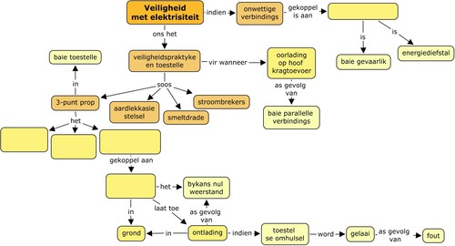
Onderwysersweergawe
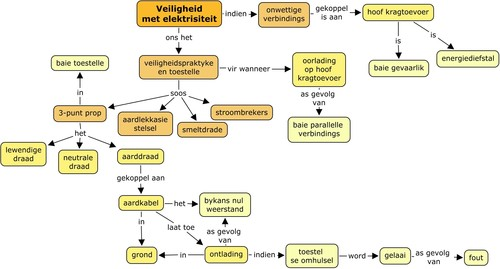
Hersieningsvrae
Verduidelik hoe 'n smeltdraad 'n elektriese stroombaan kan beskerm. [4 punte]
'n Smeltdraad is 'n draad met 'n lae weerstand wat sal smelt as die stroom te sterk is. Die smeltdraad smelt en verbreek die stroombaan. Dit stop die elektriese stroom en voorkom brande en ander veiligheidsgevare.
Wat sal gebeur as jy 'n 3 A-smeltdraad in 'n elektriese verwarmer gebruik wat 'n stroom van 8 A benodig om te werk? [1 punt]
Die 3 A-smeltdraad sal uitbrand en die verwarmer sal ophou werk.
Watter tipe smeltdraad moet jy in die 8 A-verwarmer gebruik? [1 punt]
Die smeltdraad moet 'n gradering hoër as 8 A hê, sodat dit slegs sal uitbrand wanneer die stroom groter as 8 A is.
Hoekom is stroombrekers meer gerieflik om te gebruik as smeltdrade? [2 punte]
Die stroombreker kan herset word maar die smeltdraad word vernietig en moet elke keer vervang word.
Wanneer 'n smeltdraad 'geblaas' het, hoekom dink jy is dit belangrik om die probleem reg te stel voordat jy die smeltdraad vervang? [2 punte]
As jy nie die probleem regstel nie, sal die stroom steeds te groot wees en die nuwe smeltdraad sal ook 'blaas'. Die stroombaan kan gevaarlik wees om te gebruik. Jy kan dalk die risiko loop om 'n elektriese skok op te doen.
Wat is 'n kortsluiting? [3 punte]
'n Kortsluiting is 'n alternatiewe roete met 'n besondere lae weerstand. Al die stroom sal deur die kortsluiting gaan. Weens die lae weerstand sal die stroom toeneem en dit kan 'n oorlading op die stroombaan tot gevolg hê.
Hoekom is 'n kortsluiting gevaarlik? [2 punte]
Die stroom is baie sterk in die kortsluiting en daar is die gevaar dat iemand 'n elektriesse skok kan opdoen.
Wat is die kleur van die lewendige draad in 'n elektriese koord? [1 punt]
Bruin.
Skryf een veiligheidsmaatreël neer wat nagekom behoort te word tydens die bedrading van 'n driepuntprop. [1 punt]
Maak seker dat die elektrisiteitstoevoer afgeskakel is.
Werk op 'n droë oppervlak.
Wat is die doel van die groengeel draad in 'n elektriese koord? [2 punte]
Die groengeel draad is die aarddraad. Dit verseker dat enige kragstuwing weens 'n elektriese fout veilig geaard is.
Teken die buitelyn van 'n driepuntprop en dui aan waar op die prop elke draad gekonnekteer is en watter kleur elke draad het. [6 punte]
Leerders moet die basiese buitelyn van 'n prop teken met drie sirkels aan die binnekant. Die boonste draad is die groengeel gestreepte aarddraad. Die blou neutrale draad is altyd aan die regterkantse pen gekoppel as 'n mens van onder na die prop kyk. Die bruin lewendige draad is altyd aan die linkerkantse pen gekoppel as 'n mens van onder na die prop kyk.
Teken 'n stroombaandiagram vir die volgende stroombane:
'n Seriestroombaan met twee selle en drie gloeilampe. Plaas 'n smeltdraad wat die stroombaan tydens 'n kortsluiting op so 'n manier sal verbreek dat geen van die gloeilampies brand nie. [3 punte]
'n Stroombaan met 'n sel en twee gloeilampe in parallel geskakel. Plaas 'n smeltdraad wat die stroombaan tydens 'n kortsluiting op so 'n manier sal verbreek dat slegs een gloeilampie uitdoof. [3 punte]